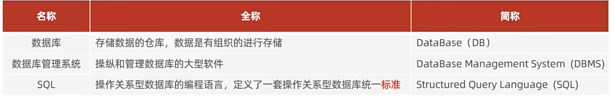

MySQL
SQL基础篇

MySQL的安装与启动
启动与停止
1 | net start <服务名> |
1 | Win + R |
SQL通用语法及分类
SQL通用语法
- 可以单行或多行书写,以分号结尾
- 可以使用空格/缩进来增强语句的可读性
- 不区分大小写,关键字建议使用大写
- 注释
- 单行注释: —注释内容 或 #注释内容(MySQL特有)
- 多行注释: / 注释内容 /
SQL分类
| 分类 | 全称 | 说明 |
|---|---|---|
| DDL | Data Definition Language | 数据定义语言,用来定义数据库对象(数据库,表,字段) |
| DML | Data Manipulation Language | 数据操作语言,用来对数据库表中的数据进行增删改 |
| DQL | Data Query Language | 数据查询语言, 用来查询数据库中表的记录 |
| DCL | Data Control Language | 数据控制语言,用来创建数据库用户,控制数据库访问权限 |
DDL
数据库操作
1 | -- 查询所有数据库 |
表操作
查询
1 | -- 查询当前数据库所有表 |
创建
1 | CREATE TABLE ( |
数据类型
| 分类 | 类型 | 大小 | 有符号数(SIGNED)范围 | 无符号(UNSIGNED)范围 | 描述 |
|---|---|---|---|---|---|
TINYINT |
1Byte | (-128-127) | (0,255) | 小整数值 | |
SMALLINT |
2Byte | (-32768,32767) | (0,65535) | 大整数值 | |
本博客所有文章除特别声明外，均采用 CC BY-NC-SA 4.0 许可协议。转载请注明来源 马嘉路！
 微信
微信 支付宝
支付宝
评论